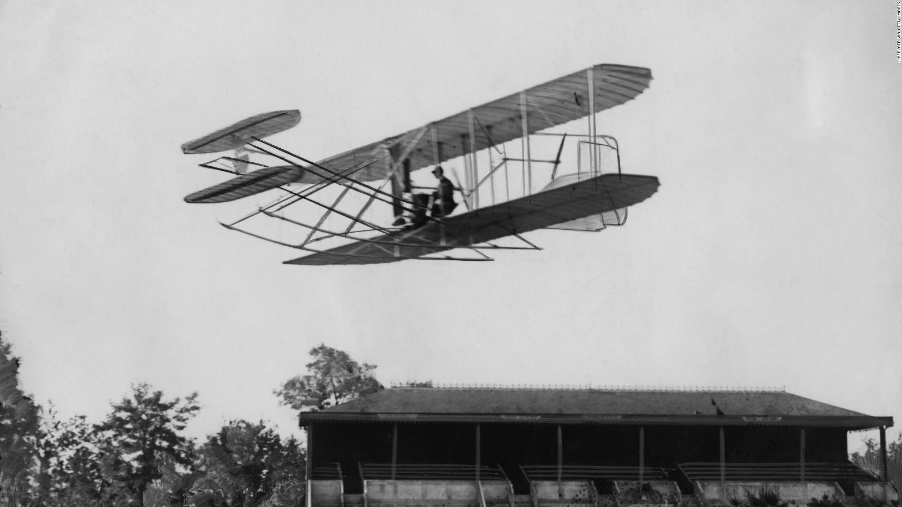
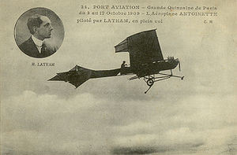
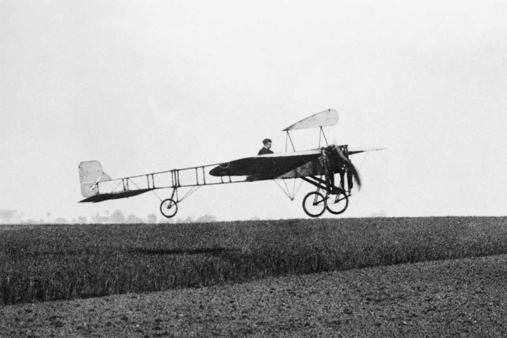
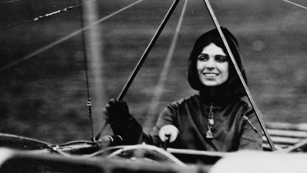

Después del primer vuelo con motor, todo iba a ir ya muy deprisa. A partir de 1906, se empezarían a visualizar la forma en que un avión comenzara a tener cambios en 30 años. Muchos intentaron en esta época vuelos peligrosos, en una carrera por conseguir el aeroplano más adecuado. Surgieron los Bleriot XI y loa Lavavasseur Antoinett, estos fueron modelos franceses que tenían los diseño en la cabeza y estaban dotados de fuselaje largo y conjunto de cola. Por ejemplo:
En agosto de 1908, Wilbur Wright mostraba en Francia la excelente maniobralidad de biplano, un año después el gobierno de Estados Unidos adoptaba el aeroplano para un uso posiblemente militar. La innovación de los hermanos Wright que fue de un gran aporte para aviación, fue el control del viraje mediante el alaveo inclinación de las alas para cambiar de dirección.

Deily Mail en el 1909 ofreció una gran recompensa a quien cruzara por primera vez el canal de la mancha, 3 fueron los que participaron en este concurso. Estos fueron:
Hubert Latham se unió a la compañía de aviación Antoinette en febrero de 1909. En este mismo año despego con su Antoinette IV para cruzar desde la parte francesa el canal de la macha hasta llegar a Inglaterra. Fue el primero en intentar cruzarlo, pero debido a un fallo del motor durante el primero de sus dos intentos al cruzar el canal, se convirtió en la primera persona el aterrizar en el agua. Hubert Latham estableció tres récords de altura entre 1909 y 1910 alcanzando los 1.384 metros de altura. Pero no pudo completar su travesía por el canal de la mancha.

Charles de Lamber, ruso aristócrata de ascendencia francés que había sido estudiante de Wilbur Wright. Lamber resulto herido durante los vuelos de prueba y por este acontecimiento tuvo que abandonar la competición.
Louis Bleriot fue un aviador, ingeniero e inventor Frances. El 25 de Julio de 1909, Louis Bleriot voló ocho kilómetros en el canal de la mancha en treinta y seis minutos y medio sin parar esperando ver a un joven en un acantilado agitando una bandera tricolor. Consiguió lograr este acto gracias a modelo Bleriot XI, un monoplano con un motor Anzani de 25 caballos. Se convirtió en un héroe internacional para los franceses.

Le tomaron importancia a este concurso no fue la velocidad ni la distancia recorrida sino el hecho de que por primera vez se sorteaba una travesía tan larga sobre el agua entre los dos territorios por el aire.
Albert Leo Stevens fue apasionado de la aeronáutica. Unos de sus aporte fue la autopista privada de EE.UU en el año 1909. Leo Stevens también jugo un papel clave en las características de la seguridad de los paracaídas.
En Wiener, Neustad 1910, Igo Etrich construyo un avión con la esperanza de mantener al imperio austrohúngaro en la conquista del aire, su avión llamado tauve (Paloma) tuvo la forma de un ave y no de la forma de la semilla que lo inspiro. Su avión funciono tan bien, que una compañía alemana inicio su producción. La nave tauve (paloma) nombre del animal considerado el símbolo de la paz se convirtió en el primer avión utilizado para lanzar bombas que eran lanzadas a mano.
Thomas Scott Baldwin, pionero de la aeronáutica que sirvió al ejercito de los Estados Unidos durante la Primera guerra mundial. Diseño el dirigible California Arrow que realiza el primer vuelo circular en los Estados unidos. En el 1910 diseño su propio avión que fue construido por Glenn Hammond Curtiss, motor Curtiss V-8 de 25 caballos.
Comenzó a probar un nuevo avión que contaba con un motor Hall Slot V8 de 60 Caballos. Bautizo a sus nuevos aviones como Red Devil y en adelante todas las aeronaves que diseñaba tomaban ese nombre. Baldwin fue reconocido como el Padre del Dirigible estadounidense.
Sir Edwin Alliot fue un piloto pionero ingles y fabricante de aeronaves. En el año 1910 Junto a su hermano Humphrey funda la AV Roe Aircraft Company (AVRO). Con su modelo más popular consigue vender casi 9.000 unidades como a la Royal Flying Corps y mas tarde a la Real Fuerza aérea para uso de entrenamiento. Su modelo Type F de 1912 fue el primer avión en utilizar cabina cerrada.
Glaude Grahame- White pionero ingles primero en realizar un vuelo nocturno, durante una carrera de Londres Manchester el año 1910. También realizo un vuelo el mismo año con un biplano sobre Washington aterrizando cerca de la caza blanca. Monto la primera defensa aérea de una ciudad en la Primera Guerra mundial.
El canard Primer hidroavión de la historia.

Contenía un sistema de dispositivo de flotación. fue Inventado por Henri Fabre aviador francés. Utilizo este hidroavión con éxito el 28 de marzo de 1910.Logro despegar de la superficie del agua convirtiéndose en el primer hidroavión de la historia que despegaba desde el agua. Esta nave esta restaurada en el museo francés del aire y el espacio.
Glenn Curtiss fue un famoso diseñador de motores de gasolina. De extraordinaria calidad y ligereza sus motores fueron utilizados en varios aviones. Glenn se inspiro de Henri Fabre y así construyo su primer aeroplano llamado Glod Bug o Golden Flyer. Tenia tren de aterrizaje estándar y otro flotador para emergencias. Con esto llego a ganar un premio de 10.000 ofrecido por el editor Joseph Pulitzer, por volar sobre el rio Hudson. En los Estados Unidos en el año1911 realizo el despegue de un hidroplano desde el agua por primera vez.
En los años 1911 la primera mujer en otorgar una licencia de piloto fue en los Estados Unidos, su nombre es Harriet Qimby. También fue la primera en cruzar el canal de la mancha en el año 1912. Durante el tercer aniversario de la aviación, Harriet volaba junto con William Willard, organizador del evento, que iba como pasajero en un Monoplano Biplaza Bleriot. Su aeronave cae a una altitud de 460 metros de altura por razones desconocidas, los dos fueron expulsados de sus asientos falleciendo en su caída. Aunque murió joven tubo bastante influencia en la historia de la aviación.

Gracias a estos grandes acontecimientos y de más de los Pioneros de la aviación,, al pasar de los años fueron evolucionando maravillosamente el mundo de la aviación gracias a estos grandes aportes de estos principales pioneros y vimos como muchos de estos fueron pilotos de las potenciales primera y segunda guerra Mundial.